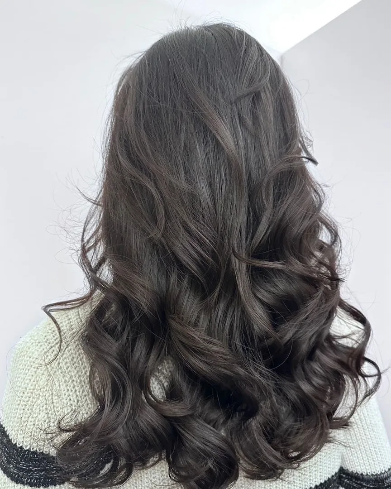
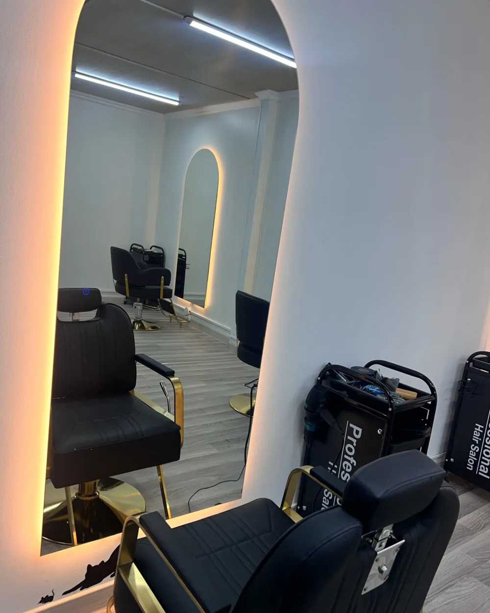
- 4,8
- в 2ГИС, 16 оценок
- 09:00–19:00
- каждый день
- Гвардейская, 24/1
- Кара-Балта
- Напитки
- бесплатно во время процедур
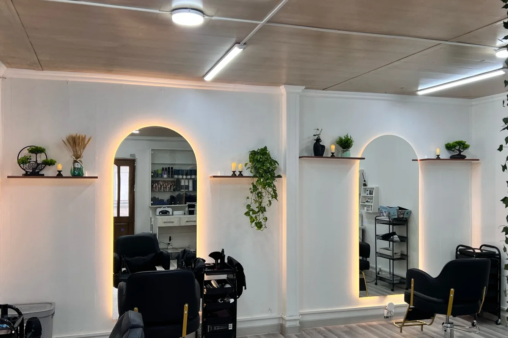
Светлый зал и кофе, пока вы ждёте
Как нас найтиХорошо постригли, мне очень понравилось. Пока ждал свою очередь попил кофе, бесплатно.
Работы
Ещё в Instagram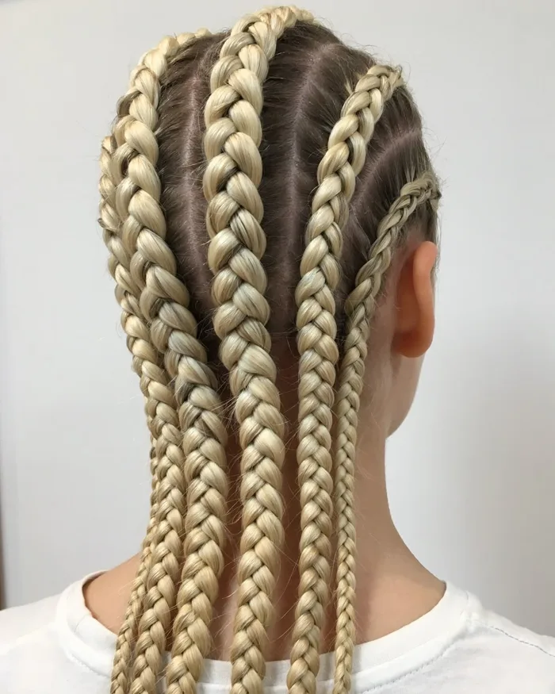
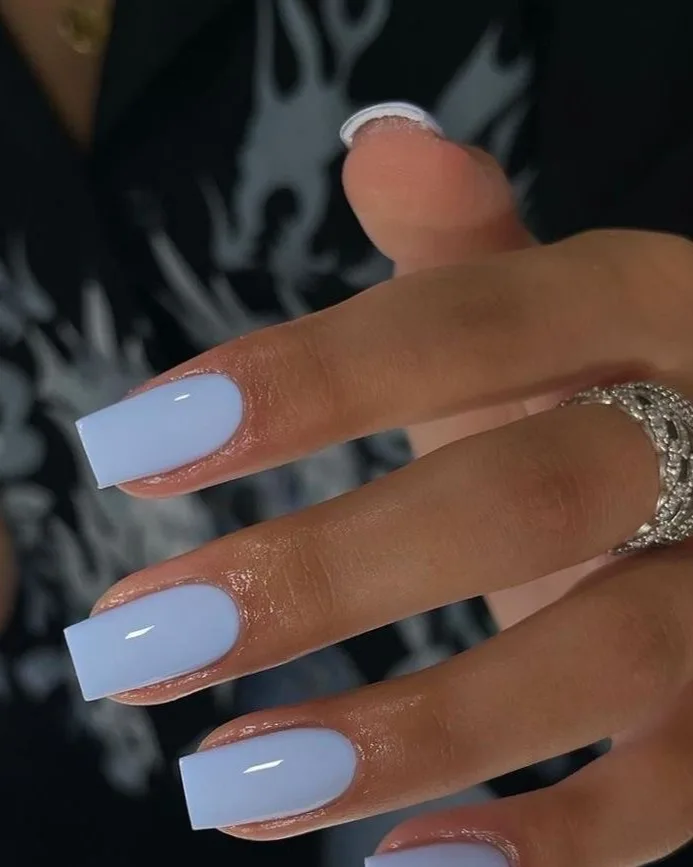
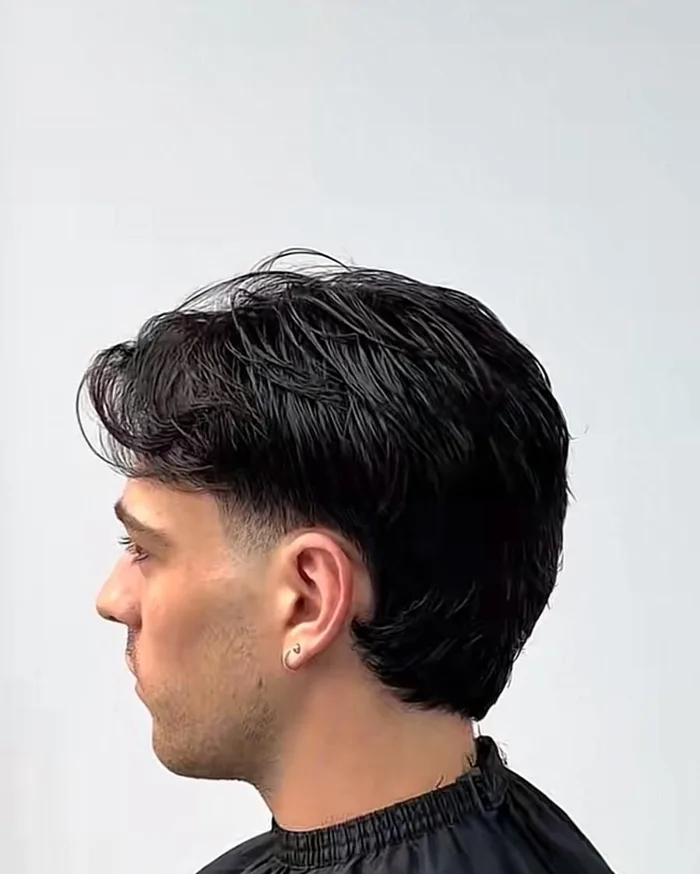
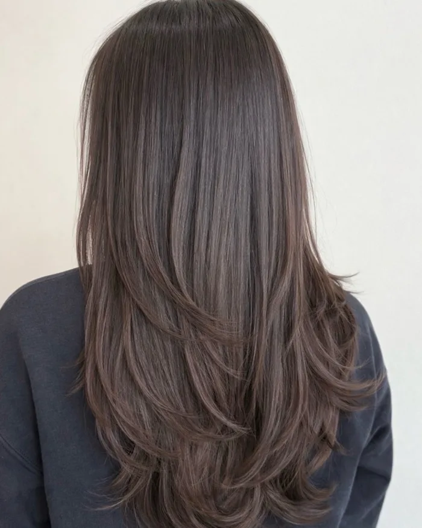
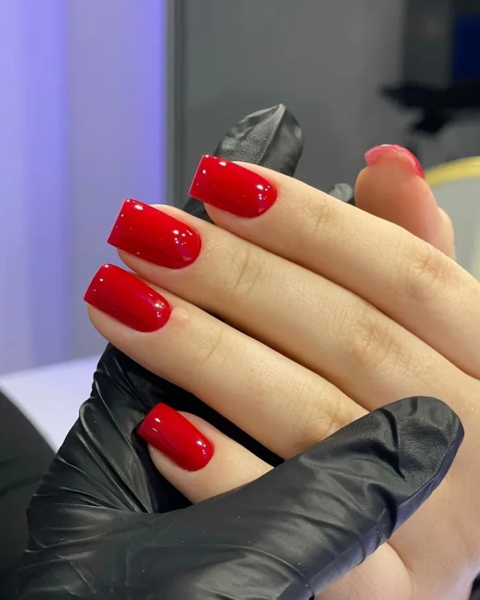
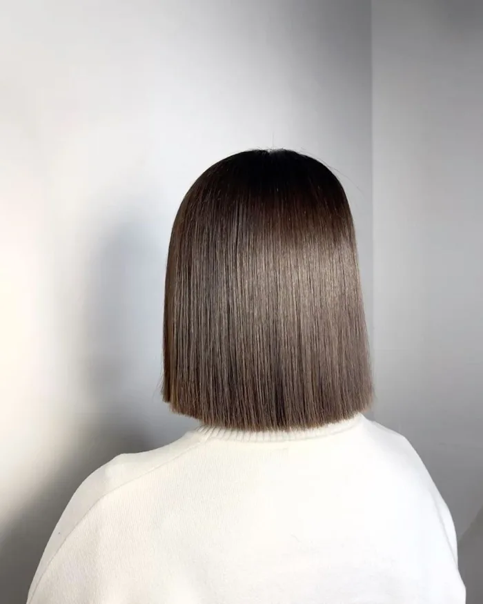
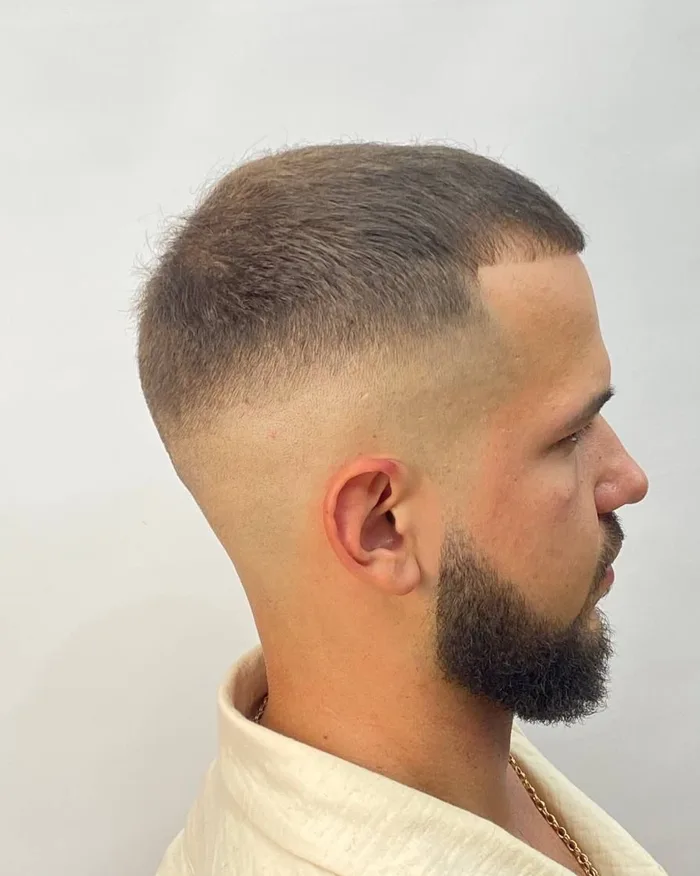
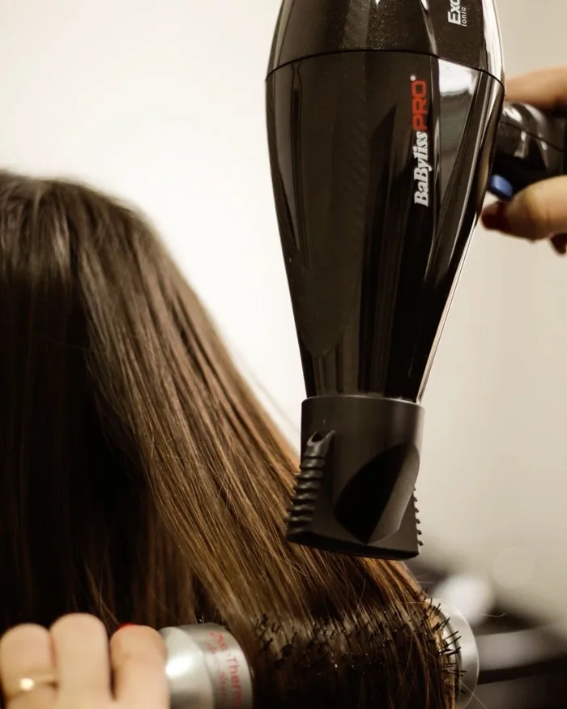
Вежливый персонал и отличный результат!
Мастер внимательно выслушал все мои пожелания ,дал совет и сделал всё на высшем уровне. В салоне чисто, уютно, приятная атмосфера, чувствуется забота о клиентах )
Обязательно вернусь ещё.
Хочу оставить отзыв салону «Марас» ❤️ Очень классный сервис, всё на высшем уровне! Отдельное спасибо Марине — шикарный мастер, настоящий профессионал своего дела! 🥰 Осталась очень довольна результатом и обязательно вернусь снова. Спасибо за вашу работу и прекрасное отношение к клиентам! ❤️
Персонал встречает с искренней улыбкой. Внимательный подход к каждому клиенту, забота и вежливость — на высшем уровне. В процессе предложили вкусный кофе и ответили на все возникшие вопросы.
Отличное обслуживание клиентов , была впервые мне все понравилось 🥰 вежливый персонал и мастера профессионалы своего дела👍👍👍а самое главное очень чисто и уютно
Мастера вежливые,тактичные, профессионалы своего дела👍
Обслуживаюсь не первый раз мне все нравится 👍 делала стрижку и ногти я в восторге
Уютный,чистый салон! квалифицированные мастера!Я осталась довольна !
Ооочень уютно, мастера клас 👍👍👍👍